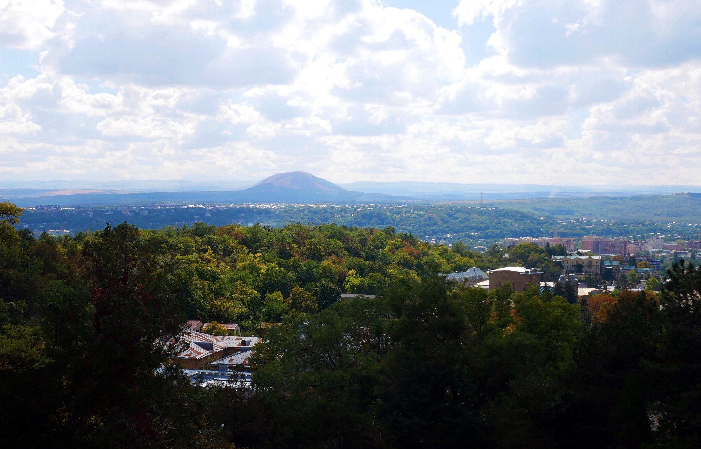
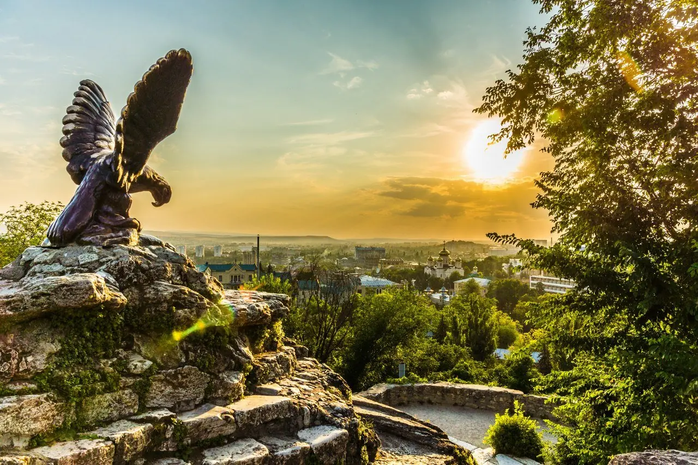
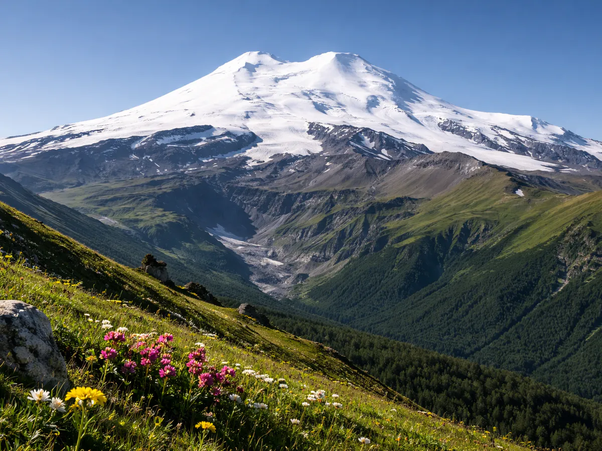

Кавказские Минеральные Воды — уникальный федеральный курортный регион на юге России, объединяющий четыре города-курорта: Пятигорск, Кисловодск, Ессентуки и Железноводск. На протяжении более двух столетий регион остаётся главной здравницей страны — сюда приезжают прежде всего за лечением и оздоровлением.
В КМВ сосредоточено свыше 130 источников минеральной воды разнообразного химического состава. Здешние воды и грязи лечат заболевания желудочно-кишечного тракта, сердечно-сосудистой, нервной и эндокринной систем. Именно лечебный туризм составляет основу местной туристической отрасли, а многие гости приезжают сюда снова и снова по путёвкам или самостоятельно.
Вместе с тем КМВ — это не только санаторные корпуса. Регион богат историческими и природными памятниками: здесь жили и творили Лермонтов и Пушкин, сохранились уникальные парковые ансамбли XIX века, величественные горы, озёра и ущелья Приэльбрусья всего в нескольких часах езды. Природа, история и целебные воды сплелись здесь воедино, делая КМВ самобытным и многогранным направлением для путешествий.
КМВ расположены на высоте 500–1000 м над уровнем моря у северных склонов Большого Кавказа. Климат умеренно континентальный, мягкий, с выраженными временами года. Летом преобладает тёплая и солнечная погода, зима относительно мягкая. Регион пригоден для лечебного отдыха круглогодично.
+8…+18 °C. Умеренная влажность, обильное цветение, нередки кратковременные дожди.
+22…+30 °C. Солнечно, жарко. Возможны грозы. Пик туристического сезона.
+8…+20 °C. Золотые пейзажи, менее многолюдно. Отличный сезон для лечения.
0…+6 °C. Мягкая, снегопады редки. Санатории работают, цены ниже.



Выберите свои показания — мы подберём подходящие санатории КМВ.
Лучшие рестораны, кафе и столовые КМВ по отзывам туристов — на любой вкус и бюджет.